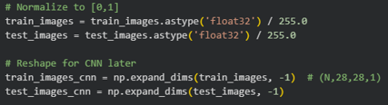
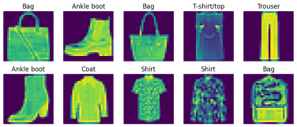
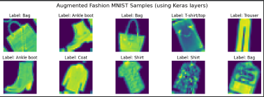
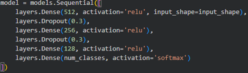
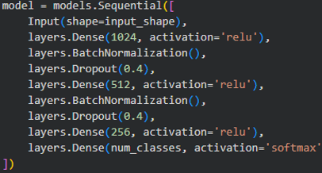
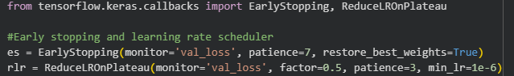
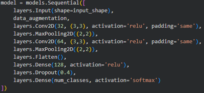
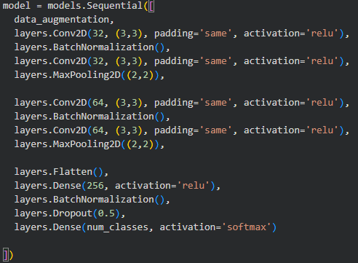
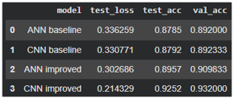

Main goals of the Project:
- Compare standard ANN and CNN implementations with the mnist-fashion dataset.
- Implement improved versions of ANN and CNN and compare their performance with the standard implementation.
- Successfully make, train and validate each model to achieve the highest accuracy.
- Test and use different methods for structuring and training the models.
Data Handling
- Compare standard ANN and CNN implementations with the mnist-fashion dataset.
- Implement improved versions of ANN and CNN and compare their performance with the standard implementation.
- Successfully make, train and validate each model to achieve the highest accuracy.
- Test and use different methods for structuring and training the models.



Artificial Neural Network (ANN)
- Structure of the basic ANN includes 4 dense layers and 2 dropout layers. Uses Adam optimiser.
- Improved ANN uses the same layers but with Batch Normalisation, Early Stopping, ReduceLROnPlateau and Nadam optimiser. Also, hyperparameter tuning was done for the improved model.
Result: Improved ANN performs noticeably better than the basic ANN.



Convolutionary Neural Network (CNN)
- Structure of the basic CNN includes a data augmentation layer, 2 convolution layers, 2 max pooling layers, 2 dense layers and 1 dropout layer. Uses Adam optimiser.
- Improved CNN uses 4 convolution layers and added Batch Normalisation. Hyperparameter tuning, Early Stopping and ReduceLPROnPlateau were also implemented. Still using Adam optimiser.
Result is that the improved CNN outperforms the basic CNN as well as both ANN and improved ANN models.


Results


Screenshots provided: Confusion Matrices of all models, Loss and Accuracy graphs of all models and the highest numbers achieved during training and validating.
Basic CNN and ANN have very similar results around ~89% accuracy while improved ANN reaches ~90% and improved CNN reaching up to ~93% accuracy.
Tested methods and changes
- Optimiser: Attempted to use different optimisers such as Adamax and SGD with momentum, resulting in the model having less accuracy overall so the changes were removed.
- Activation Functions: Even though LeakyReLU seemed better on paper, implementing it in the project only affected it negatively.
- Regularisation: Also failed to improve the accuracy of the model.
- Kernel Sizes, Filters and Hyper Parameters:Changing them made a huge positive impact on the models and their time for training.
- Batch Normalisation and Extra Layers:Batch normalization helps stabilize and speed up training by keeping layer activations well-scaled, improving gradient flow and overall model performance. Extra layers in the model’s structure allowed more overall parameters resulting in more complex and bigger neural networks, thus enabling them to be trained at a higher capacity.
Why CNN outperforms ANN?
The results show that while both models performed well on the MNIST dataset, the CNN achieved higher accuracy and better generalization than the ANN. This is because CNNs can automatically learn spatial features and patterns from the images, whereas ANNs treat each pixel independently. However, the CNN required more computational resources and longer training time. Overall, this comparison highlights the trade-off between model complexity and performance in image classification tasks.
Extra Inovation
Using a different dataset with human faces that show emotions, I was able to train a CNN and take pictures of my self with a camera to test the models accuracy.